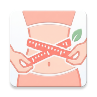
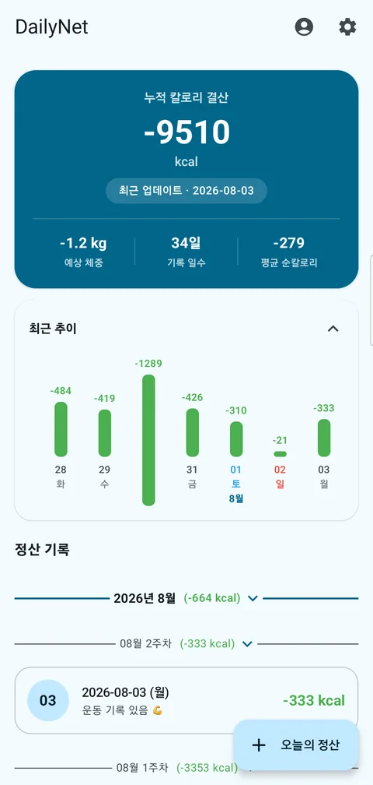
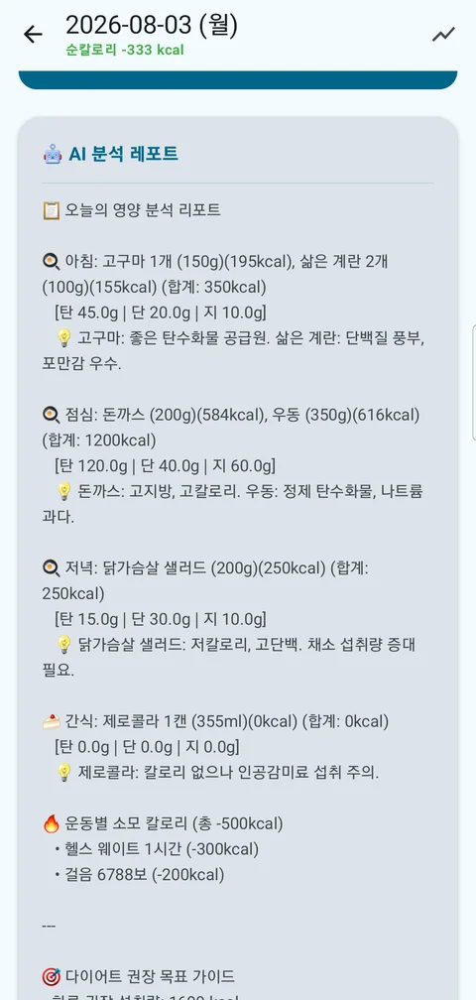
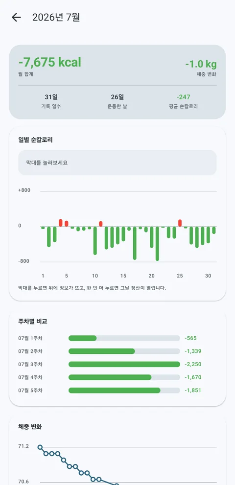

DailyNet섭취 칼로리에서 기초대사량과 운동·걸음 수 소모량을 뺍니다. 그래서 “많이 먹었나”가 아니라 “쓴 것보다 더 먹었나”가 나옵니다.
Google Play 에서 받기 Android · 무료


AI가 사진에서 메뉴를 읽어 입력창에 넣어줍니다. 결과는 초안이라 직접 고칠 수 있고, 사진은 텍스트로 바꾼 뒤 저장하지 않고 폐기합니다.
브랜드 가공식품은 식품의약품안전처 식품영양성분 DB를 조회해 실제 값으로 바로잡습니다. “새우깡 3개”, “우유 200ml”처럼 개수와 용량도 반영하고 제로 표기도 구분합니다.
1일부터 말일까지 일별 순칼로리, 주차별 비교, 체중 곡선, 가장 잘한 날까지. 안 적은 날은 빈칸으로 남아서 빠뜨린 날이 그대로 보입니다.
걸음 수는 Health Connect에서 자동으로 읽어옵니다. 홈 화면 위젯으로 앱을 열지 않아도 오늘의 순칼로리가 보이고, 정산을 안 한 날은 밤 9시에 한 번 알려줍니다.
이용권이 있으면